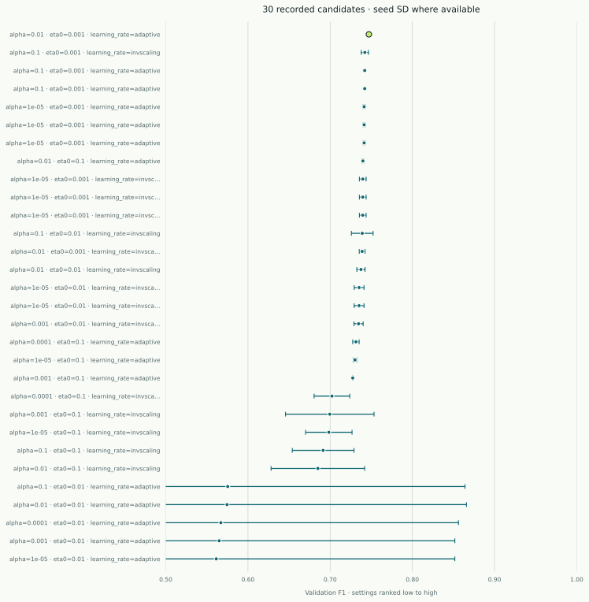
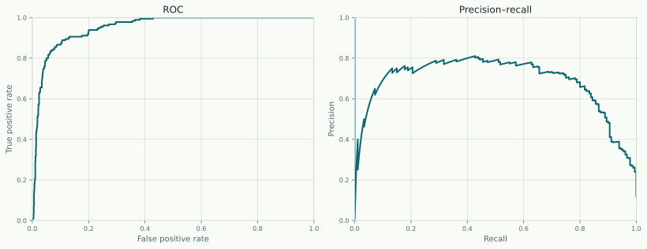
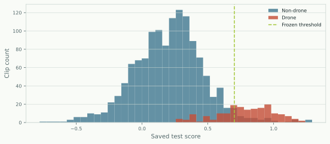

DECISION BEHAVIOR
Move the threshold
This reclassifies only the anonymous saved test scores.
Linear baseline · frozen designated fit · seed 42
Stochastic gradient descent regressor; 30 settings compared in the ledger. Winner retained from validation selection.
Validation search · 30 recorded candidates
Chart form follows the recorded search: parameter maps for complete grids, response curves for ordered sweeps, and ranked dot plots when settings vary across several dimensions. The held-out test did not choose these settings.

| Rank | Recorded setting | Mean validation F1 | Seed SD | Seeds |
|---|---|---|---|---|
| 01 | {"alpha":0.01,"eta0":0.001,"learning_rate":"adaptive"} | 0.7471 | 0.0000 | 3 |
| 02 | {"alpha":0.1,"eta0":0.001,"learning_rate":"invscaling"} | 0.7422 | 0.0044 | 3 |
| 03 | {"alpha":0.1,"eta0":0.001,"learning_rate":"adaptive"} | 0.7420 | 0.0000 | 3 |
| 04 | {"alpha":0.1,"eta0":0.001,"learning_rate":"adaptive"} | 0.7420 | 0.0000 | 3 |
| 05 | {"alpha":1e-05,"eta0":0.001,"learning_rate":"adaptive"} | 0.7413 | 0.0012 | 3 |
| 06 | {"alpha":1e-05,"eta0":0.001,"learning_rate":"adaptive"} | 0.7413 | 0.0012 | 3 |
| 07 | {"alpha":1e-05,"eta0":0.001,"learning_rate":"adaptive"} | 0.7413 | 0.0012 | 3 |
| 08 | {"alpha":0.01,"eta0":0.1,"learning_rate":"adaptive"} | 0.7398 | 0.0012 | 3 |
| 09 | {"alpha":1e-05,"eta0":0.001,"learning_rate":"invscaling"} | 0.7396 | 0.0041 | 3 |
| 10 | {"alpha":1e-05,"eta0":0.001,"learning_rate":"invscaling"} | 0.7396 | 0.0041 | 3 |
| 11 | {"alpha":1e-05,"eta0":0.001,"learning_rate":"invscaling"} | 0.7396 | 0.0041 | 3 |
| 12 | {"alpha":0.1,"eta0":0.01,"learning_rate":"invscaling"} | 0.7390 | 0.0132 | 3 |
| 13 | {"alpha":0.01,"eta0":0.001,"learning_rate":"invscaling"} | 0.7389 | 0.0035 | 3 |
| 14 | {"alpha":0.01,"eta0":0.01,"learning_rate":"invscaling"} | 0.7374 | 0.0050 | 3 |
| 15 | {"alpha":1e-05,"eta0":0.01,"learning_rate":"invscaling"} | 0.7352 | 0.0060 | 3 |
| 16 | {"alpha":1e-05,"eta0":0.01,"learning_rate":"invscaling"} | 0.7352 | 0.0060 | 3 |
| 17 | {"alpha":0.001,"eta0":0.01,"learning_rate":"invscaling"} | 0.7345 | 0.0056 | 3 |
| 18 | {"alpha":0.0001,"eta0":0.1,"learning_rate":"adaptive"} | 0.7313 | 0.0039 | 3 |
| 19 | {"alpha":1e-05,"eta0":0.1,"learning_rate":"adaptive"} | 0.7302 | 0.0021 | 3 |
| 20 | {"alpha":0.001,"eta0":0.1,"learning_rate":"adaptive"} | 0.7274 | 0.0003 | 3 |
| 21 | {"alpha":0.0001,"eta0":0.1,"learning_rate":"invscaling"} | 0.7021 | 0.0217 | 3 |
| 22 | {"alpha":0.001,"eta0":0.1,"learning_rate":"invscaling"} | 0.6995 | 0.0538 | 3 |
| 23 | {"alpha":1e-05,"eta0":0.1,"learning_rate":"invscaling"} | 0.6984 | 0.0282 | 3 |
| 24 | {"alpha":0.1,"eta0":0.1,"learning_rate":"invscaling"} | 0.6915 | 0.0375 | 3 |
| 25 | {"alpha":0.01,"eta0":0.1,"learning_rate":"invscaling"} | 0.6850 | 0.0569 | 3 |
| 26 | {"alpha":0.1,"eta0":0.01,"learning_rate":"adaptive"} | 0.5754 | 0.2887 | 3 |
| 27 | {"alpha":0.01,"eta0":0.01,"learning_rate":"adaptive"} | 0.5745 | 0.2913 | 3 |
| 28 | {"alpha":0.0001,"eta0":0.01,"learning_rate":"adaptive"} | 0.5670 | 0.2891 | 3 |
| 29 | {"alpha":0.001,"eta0":0.01,"learning_rate":"adaptive"} | 0.5650 | 0.2867 | 3 |
| 30 | {"alpha":1e-05,"eta0":0.01,"learning_rate":"adaptive"} | 0.5614 | 0.2902 | 3 |
Frozen test scores · 1,506 clips
The curve is derived from the saved score vector. The confusion matrix starts at the validation-frozen threshold.

This reclassifies only the anonymous saved test scores.
Blue: non-drone · coral: drone

Matched group comparisons
Intervals crossing zero do not establish a difference or equivalence. Positive values favor this model.
| Compared model | Difference direction | 95% paired CI | Read |
|---|---|---|---|
| Linear regression | SGD regressor − Linear regression (reversed pair) | [-0.095, +0.017] | crosses zero |
| Logistic regression | SGD regressor − Logistic regression | [-0.027, +0.044] | crosses zero |
Compute and lineage